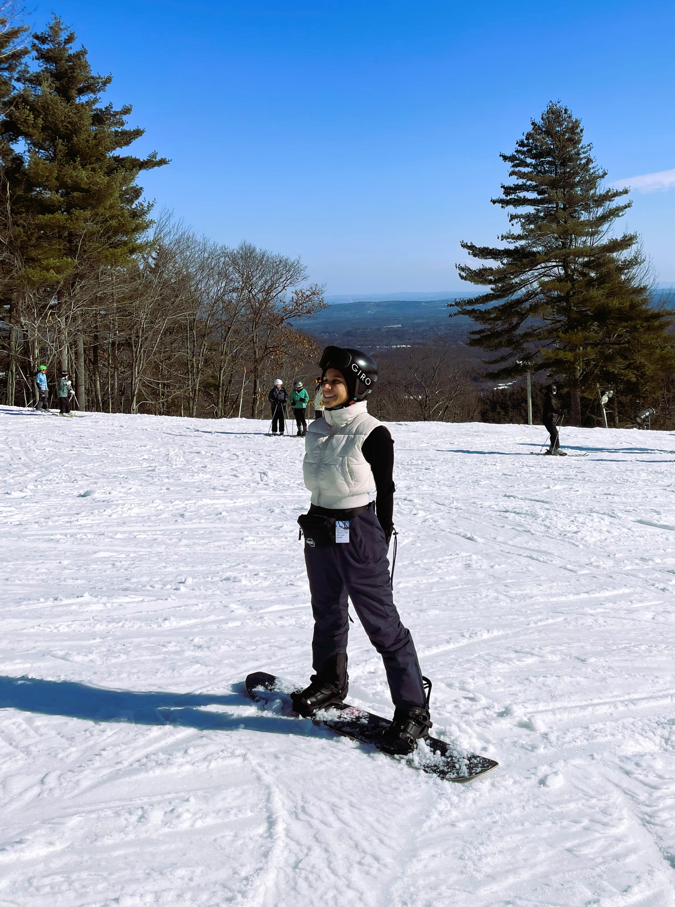
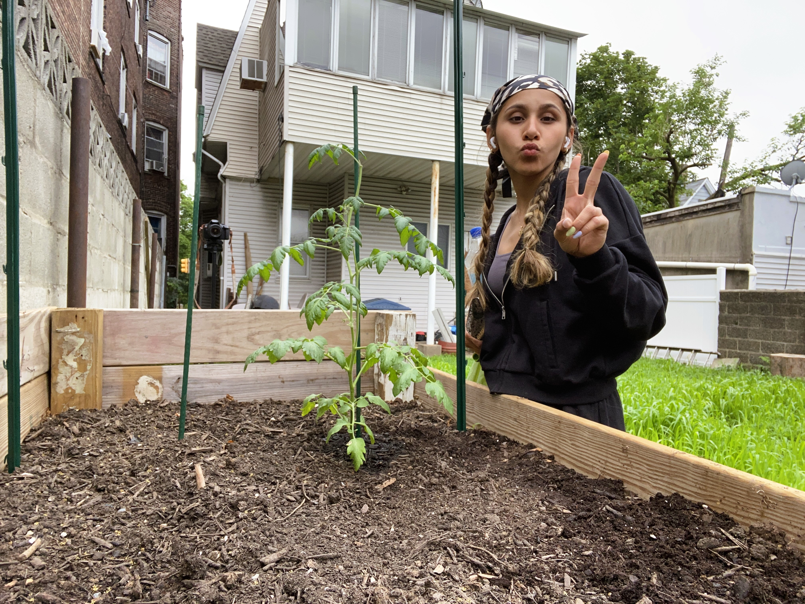

- Skateboarding
-
From the moment I first stepped foot on a board, I felt an
exhilarating rush unlike anything else. With each heelflip and
ollie, I soared through the streets, my spirit was unbound by the
constraints of gravity. Skateboarding is a source of freedom, expression and empowerment.
I tell myself, if I can skateboard, then I can do anything I set my mind to!
I've found a sense of belonging within the skateboarding community. Through each skatepark, I've found camaraderie and friendship in fellow riders, bonding over shared triumphs and wipeouts alike. Together, we pushed each other to new heights, constantly striving to innovate and push the boundaries of what was possible on a board attached to four wheels.
- Snowboarding
-
Newbie snowboarder here, started two years ago because my skateboarding
friends insisted that I would be good. As I mentioned above, nothing is
an obstacle because I skateboard. My friends were right, I am really good
and I truly enjoy this sport. I want to dedicate this section to them because
they're constantly pushing me to try new things. I'm not sure where I would
be if it weren't for them.
Snowboarding wasn't as easy as I make it to be. There were many...many falls along the way which caused me to feel doubt and frustration. Yet, through perseverance and determination, I always found the strength to pick myself back up and try again. Winters are no longer boring and I have a refound love for it.

- Gardening
- My father was born in Cabo Rojo, Puerto Rico. The area he lived in was also known as 'El Campo', which is another way to say that he lived in the country-side. His days consisted of farm work and mechanical/physical labor, he loved to grow produce, tinker with machinery, or homes. My father taught me how to grow produce, flowers, and plants. Thank you daddy, you will continue to live in my heart!
